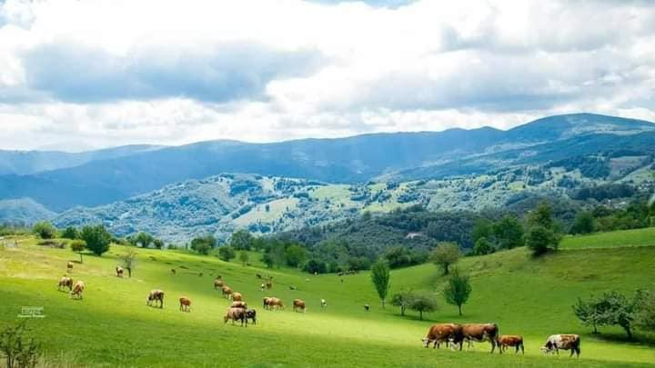
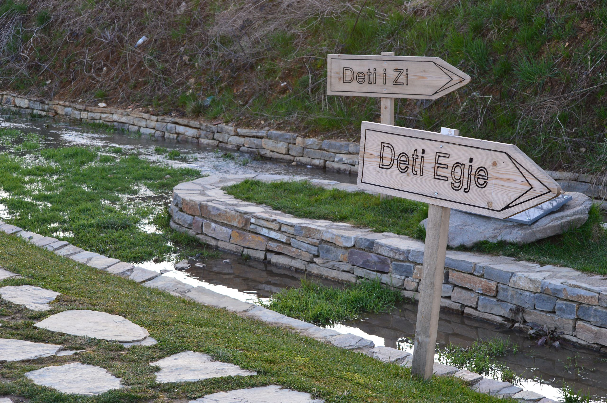
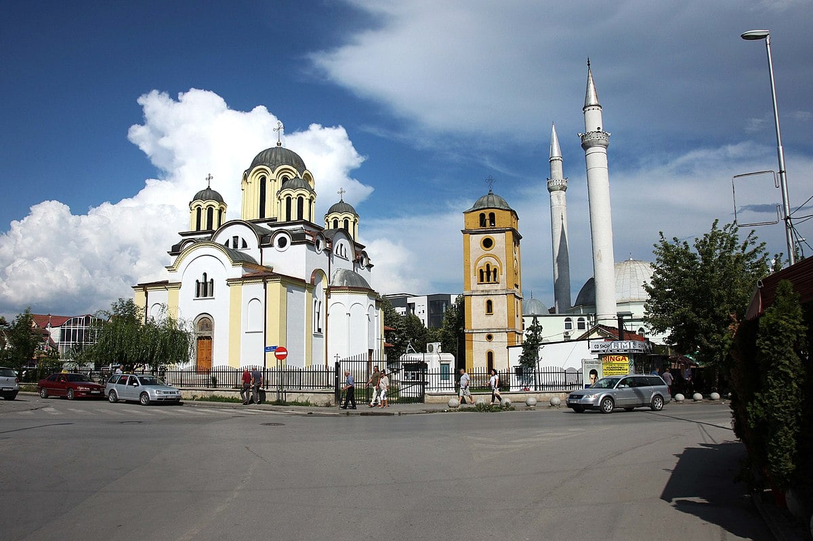
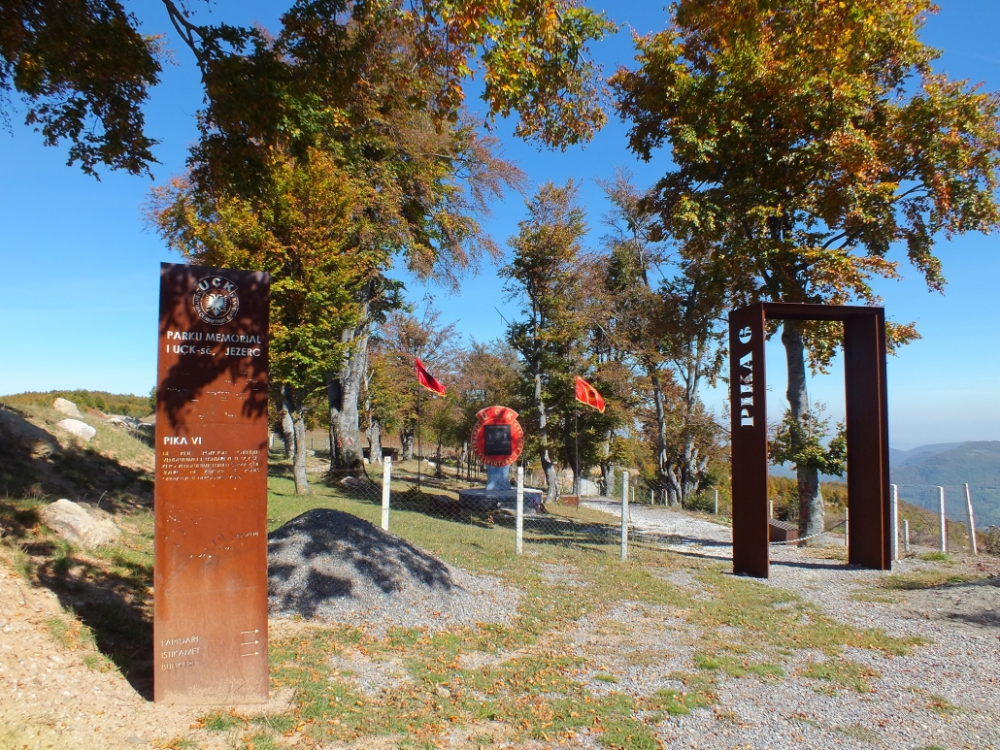

Pikat turistike e qytetit të Ferizajit!

Jezerci Jezerci është një vendbanim në komunën e Ferizajt, Kosovë. Pas vitit 1999 fshati është i njohur edhe me emrat Bjeshkas dhe Kushtrim. Fshati Jezercë është në lindje të tij dhe përfshin një nga hapësirat gjeografike më të mëdha në këtë komunë si dhe në Kosovë. Jezerca është një vendbanim kodrinor- malor i tipit të shkapërderdhur, por një çerdhe veprimtarësh atdhetarë për çështjen kombëtare-liridashëse. Ka një lashtësi, por zyrtarisht nuk janë bërë hulumtime. Nga punët e rastësishme janë gjetur eksponate të ndryshme, që vërtetojnë një lashtësi të këtij vendbanimi. Thuhet se fshati Jezercë është një fshat i banushëm që nga koha iliro-romake.Në Jezercën e thellë malor, ka filluar të zhvillohet turizmi rural, fshat ky cili ka resurse të mëdha për zhvillimin e turizmit. Relievi i Jezercës ofron kushte të mira për argëtim me biçikletë, natyra me male dhe livadhe të shumëta e kroje japin mundësi marrshimi në shtigje të gjata dhe të shkurtëra. Natyra ofron edhe mundësi argëtimi me fluturake aeronautike, ofron mundësi edhe për alpinizmin, kalërimin, gjuetinë, peshkimin, skijimin dhe tjera.
Bifurkacioni Bifurkacioni (Bigëzimi) i lumit të Nerodimes është fenomen natyror i ndarjes së lumit në dy degë dhe derdhjes në ujëmbledhësa të ndryshëm detar.
Bifurkacioni i lumit Nerodime paraqet një shembull të vetëm në Evropë të derdhjes së një lumi në dy dete. Lumi i Nerodimës buron në Bjeshkët e Jezercit; në afërsi të Ferizajt ndahet pakthyeshëm në dy degë, të cilat kanë derdhje në dy dete të ndryshme. Dega veriore (dega e majtë) derdhet në lumin Sitnicë dhe vazhdon rrugëtimin në lumin Ibër, Moravë dhe përmes Danubit derdhet në Detin e Zi, ndërsa dega jugore (dega e djathtë) përmes lumit Lepenc dhe Vardarit derdhet në Detin Egje. Ky kuriozitet natyror është mjaft tërheqës për shumë studiues (gjeograf, gjeolog, hidrolog, historian) etj., dhe ka rëndësi të madhe edukativo-arsimore, shkencore dhe turistike. Bifurkacioni i lumit Nerodime nga viti 1979 është vënë nën mbrojtje ligjore si Rezervat special i natyrës. Sipërfaqja e mbrojtur është 12.78,71 ha.


Xhamia dhe Kisha Ferizaj është një prej qyteteve të rralla në botë ku në të njëjtën hapësirë qëndrojnë së bashku xhamia dhe kisha ortodokse.
Pas shumë dekadave të ndarjes tashmë ky imam dhe prift janë bashkuar për të zgjidhur problemet që ata kanë.Si ky monument pak në botë ka. Për shembull ka xhami dhe kishën në një oborr. Nuk e di kur është ndërtuar, a është periudhë e gjatë, a është ndërtuar xhamia qysh më herët por meqenëse është ndërtuar në një oborr, për mendim timin kisha thënë që të jenë dy simbole pa ndërprerje, pa mur ndarës. Kështu kishë me qenë më mirë për opinion që mos të ketë pengesa”.
Pika I Pika I e UÇK-së ndodhet në hyrje të fshatit Jezerc, në rrugën kryesore të fshatit, mbi vendin e quajtur “Bashkimi i dy lumenjve”. Kjo pikë ka qenë vija e parë e frontit ku është zhvilluar lufta gjatë viteve 1998-1999, e cila nuk është thyer asnjëherë nga forcat serbe. Aktualisht, kjo pikë është pjesë e Parkut Memorial të UÇK-së në Jezerc, e cila si e tillë tashmë është pjesë e rëndësishme e trashëgimisë historike, dhe ka për qëllim të lartësoj luftën e UÇK-së në Zonën Operative të Neredimes.


Pika VI e UÇK-së Pika e VI e UÇK-së ka qenë një nga pikat më të rëndësishme të luftës së UÇK-së në Zonën Operative të Neredimes. Aktualisht, kjo pikë ka për qëllim të lartësoj këtë luftë, dhe si e tillë tashmë është pjesë e rëndësishme e trashëgimisë historike. Në vazhdimësi vizitohet nga vizitorë të ndryshëm, të cilët vijnë nga vende të ndryshme të Kosovës dhe më gjerë. Kjo pikë është gjithashtu pjesë e Parkut Memorial të UÇK-së në Jezerc.